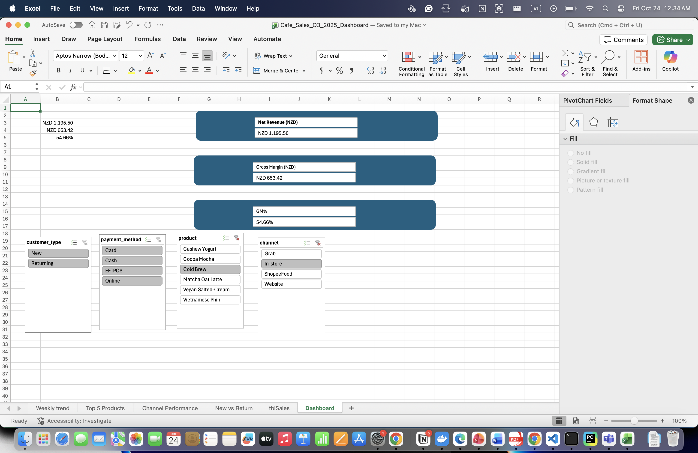

Business Questions
- What are our weekly sales & margins?
- Which products & channels drive profit?
- Are discounts working?
- New vs returning customer revenue?
Key KPIs (from Excel)

Storytelling & Manager Insights
HATSIM, a vegan café in Auckland, aimed to identify high-margin products and channels driving profit during Q3 2025. Using Excel PivotTables and slicers, I transformed 1,200 café transactions into clear business insights.
- Insight 1: Vegan Salted-Cream Coffee = ~30% of net revenue, ~48% gross margin → scale this hero item.
- Insight 2: Grab delivery channel margins 10% lower than in-store → adjust pricing or bundle promos.
- Insight 3: Returning customers spend 1.6× new ones → launch loyalty rewards on Fridays.
Actions: Focus marketing on top product, refine delivery pricing, and pilot loyalty promotions to raise margins by 8% next quarter.
Findings & Actions
- Vegan Salted-Cream Coffee contributes 30%+ of net revenue with strong GM.
- Grab channel yields lower margin — adjust delivery price or promote bundles.
- Returning customers spend more on Fridays — test loyalty promo.
Data & Method
Data: Synthetic CSV (Jul–Sep 2025). Built in Excel using PivotTables, slicers, and charts. All raw data immutable.